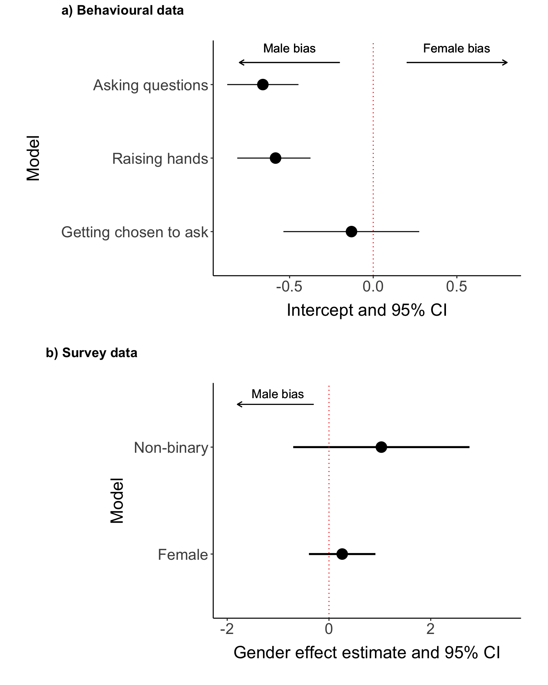

5Do women raise their hands less or get chosen less often?
Author
Rebecca S. Chen
How does the gender disparity arise?
Because we recorded not only the gender of the participants who asked questions, but also the gender of the people who raised their hands to ask their question, we could identify how the gender disparity in question asking arose.
5.1 Do women raise their hands less often?
First, we asked whether women raise their hands less than men do, by fitting a binomial GLMM where the dependent variables were the number of women and men that raised their hands, while accounting for the gender proportion of the audience and the nonindependence of talks within a session, similar to above (see Methods for details).
# subset datadata_control <-subset(data_analysis, treatment =="Control"&is.na(followup) &is.na(jumper)&is.na(host_asks) &!grepl("speaker|questioner", allocator_question))data_control <-droplevels(data_control)# second dataset to test robustness to data with uncertaintydata_conserved <-subset(data_control, uncertainty_count_audience ==0& uncertainty_count_hands ==0)# exclude situations where the hand count was incorrect and there were on paper more hands raised by men only then in totaldata_hands <-subset(data_control, hands_prop_men <=1)m_qa_hands <-glmer(cbind(hands_women, hands_men) ~1+ (1|session_id/talk_id), family ="binomial", offset=boot::logit(audience_women_prop), data = data_hands)# model outputsummary(m_qa_hands)
Generalized linear mixed model fit by maximum likelihood (Laplace
Approximation) [glmerMod]
Family: binomial ( logit )
Formula: cbind(hands_women, hands_men) ~ 1 + (1 | session_id/talk_id)
Data: data_hands
Offset: boot::logit(audience_women_prop)
AIC BIC logLik deviance df.resid
606.4 618.0 -300.2 600.4 346
Scaled residuals:
Min 1Q Median 3Q Max
-1.51074 -0.94505 -0.00957 0.93434 1.81749
Random effects:
Groups Name Variance Std.Dev.
talk_id:session_id (Intercept) 0.11019 0.3320
session_id (Intercept) 0.05309 0.2304
Number of obs: 349, groups: talk_id:session_id, 127; session_id, 24
Fixed effects:
Estimate Std. Error z value Pr(>|z|)
(Intercept) -0.5838 0.1071 -5.448 5.08e-08 ***
---
Signif. codes: 0 '***' 0.001 '**' 0.01 '*' 0.05 '.' 0.1 ' ' 1
# use helper function to collect model output in data framem_qa_hands_out <-collect_out(model = m_qa_hands, null =NA, name ="QA_hands", n_factors =0, type ="qa", save="yes", dir="../results/question-asking/")m_qa_hands_out %>%t() %>%kbl() %>%kable_classic_2()
model_name
QA_hands
AIC
606.409
n_obs
349
lrt_pval
NA
lrt_chisq
NA
intercept_estimate
-0.584
intercept_estimate_prop
0.358
intercept_pval
0
intercept_ci_lower
-0.813
intercept_ci_higher
-0.375
n_factors
0
5.2 Do women get chosen less to ask their question?
5.2.1 Observational data
Next, we asked whether women get chosen less to ask their question, by fitting another binomial GLMM using the gender of the questioner as the dependent variable, but this time correcting for the gender proportion of the people that raised their hands instead.
# exclude situations where the host did not make a choice between genders (i.e. only men or only women raised hands)m_qa_chosen <-glmer(gender_questioner_female ~1+ (1|talk_id), family ="binomial", offset=boot::logit(hands_prop_women), data =subset(data_hands, hands_prop_women !=0& hands_prop_women !=1))# can't get the CI's when including (1|session_id/talk_id)! # model outputsummary(m_qa_chosen)
Generalized linear mixed model fit by maximum likelihood (Laplace
Approximation) [glmerMod]
Family: binomial ( logit )
Formula: gender_questioner_female ~ 1 + (1 | talk_id)
Data: subset(data_hands, hands_prop_women != 0 & hands_prop_women != 1)
Offset: boot::logit(hands_prop_women)
AIC BIC logLik deviance df.resid
139.1 144.3 -67.6 135.1 97
Scaled residuals:
Min 1Q Median 3Q Max
-1.8742 -0.9371 -0.6626 1.0671 1.5092
Random effects:
Groups Name Variance Std.Dev.
talk_id (Intercept) 0 0
Number of obs: 99, groups: talk_id, 67
Fixed effects:
Estimate Std. Error z value Pr(>|z|)
(Intercept) -0.1300 0.2065 -0.629 0.529
optimizer (Nelder_Mead) convergence code: 0 (OK)
boundary (singular) fit: see help('isSingular')
# use helper function to collect model output in data framem_qa_chosen_out <-collect_out(model = m_qa_chosen, null =NA, name ="QA_chosen", n_factors =0, type ="qa", save="yes", dir="../results/question-asking/")m_qa_chosen_out %>%t() %>%kbl() %>%kable_classic_2()
model_name
QA_chosen
AIC
139.103
n_obs
99
lrt_pval
NA
lrt_chisq
NA
intercept_estimate
-0.13
intercept_estimate_prop
0.468
intercept_pval
0.529
intercept_ci_lower
-0.537
intercept_ci_higher
0.275
n_factors
0
Thus, we show that women ask less questions at the congress because women raised their hands less often than men do (GLMM intercept = -0.584, p-value = 0), not because they were chosen less often by session hosts to ask their question compared to men (GLMM intercept = -0.13, p-value = 0.529).
5.2.2 Survey data
We can answer whether there is a gender disparity in the probability that a person did not ask a question because they were not chosen to do so using the post-congress survey data, too. More specifically, we asked the question in the survey if a person did not ask a question because they were not chosen to do so. We model if the response to this (applies = 1, doesn’t apply = 0) is affected by gender.
# model and null modelm_survey_chosen <-glm(reason_noquestion_notchosen ~ gender, data =subset(survey, !is.na(gender)), family ="binomial")summary(m_survey_chosen)
Call:
glm(formula = reason_noquestion_notchosen ~ gender, family = "binomial",
data = subset(survey, !is.na(gender)))
Coefficients:
Estimate Std. Error z value Pr(>|z|)
(Intercept) -1.9459 0.2857 -6.811 9.71e-12 ***
genderFemale 0.2595 0.3336 0.778 0.437
genderNon-binary 1.0296 0.8841 1.165 0.244
---
Signif. codes: 0 '***' 0.001 '**' 0.01 '*' 0.05 '.' 0.1 ' ' 1
(Dispersion parameter for binomial family taken to be 1)
Null deviance: 316.16 on 374 degrees of freedom
Residual deviance: 314.67 on 372 degrees of freedom
(5 observations deleted due to missingness)
AIC: 320.67
Number of Fisher Scoring iterations: 4
m_survey_chosen_null <-glm(reason_noquestion_notchosen ~1, data =subset(survey, !is.na(gender)), family ="binomial")# helper function to get model outputm_survey_chosen_out <-collect_out(model = m_survey_chosen, null = m_survey_chosen_null, name="survey_qa_chosen", n_factors =2, type="survey", save="yes", dir="../results/question-asking/")m_survey_chosen_out %>%t() %>%kbl() %>%kable_classic_2()
model_name
survey_qa_chosen
AIC
320.673
n_obs
375
lrt_pval
0.475
lrt_chisq
1.491
intercept_estimate
-1.946
intercept_estimate_prop
0.125
intercept_pval
0
intercept_ci_lower
-2.506
intercept_ci_higher
-1.386
n_factors
2
est_genderFemale
0.26
lowerCI_genderFemale
-0.394
higherCI_genderFemale
0.913
pval_genderFemale
0.437
zval_genderFemale
0.778
est_genderNon-binary
1.03
lowerCI_genderNon-binary
-0.703
higherCI_genderNon-binary
2.762
pval_genderNon-binary
0.244
zval_genderNon-binary
1.165
In line with the observational data, gender did not contribute to the probability that a person did not ask a question because they were not chosen to do so based on the survey data (LRT p-value = 0.475)
The gender disparity in question asking therefore likely arises due to internal factors that cause women to raise their hands less often to ask a question compared to men.
5.3 Plot data
Next, we can plot the results to visualize the reason why women ask less questions than men do.
# combine output from all sessions and plenaries m_why_general <-rbind(m_qa_chosen_out, m_qa_hands_out, m_qa_general_out)m_why_general$name <-c("Getting chosen to ask", "Raising hands", "Asking questions") m_why_general$name <-factor(m_why_general$name, levels=c("Getting chosen to ask", "Raising hands", "Asking questions"))ggplot(m_why_general) +geom_point(aes(x = intercept_estimate, y = name), size =5) +geom_segment(aes(x = intercept_ci_lower, xend = intercept_ci_higher, y = name),linewidth=0.5) +geom_vline(xintercept =0, col ="red", linetype ="dotted") +labs(x ="Intercept and 95% CI", y ="Model") +geom_text(aes(label ="Male bias", y =3.5, x =-0.5, size =4))+geom_text(aes(label ="Female bias", y =3.5, x =0.5, size =4)) +geom_segment(aes(x =-0.2, xend =-0.8, y =3.3),col ="black", arrow =arrow(length=unit(0.2, "cm")))+geom_segment(aes(x =0.2, xend =0.8, y =3.3),col ="black", arrow =arrow(length=unit(0.2, "cm"))) +theme(legend.position ="none") -> plot_1_qa_why### also add survey# convert to include both female and non-binarym_survey_chosen_out$name <-c("Didn't ask because I wasn't chosen to") m_survey_chosen_out_long <-data.frame(factor =c("Female", "Non-binary"),estimate =c(m_survey_chosen_out$est_genderFemale, m_survey_chosen_out$`est_genderNon-binary`),lower =c(m_survey_chosen_out$lowerCI_genderFemale, m_survey_chosen_out$`lowerCI_genderNon-binary`),upper =c(m_survey_chosen_out$higherCI_genderFemale, m_survey_chosen_out$`higherCI_genderNon-binary`))ggplot(m_survey_chosen_out_long) +geom_point(aes(x = estimate, y = factor), size =5) +geom_segment(aes(x = lower, xend = upper, y = factor),linewidth=1) +geom_vline(xintercept =0, col ="red", linetype ="dotted") +labs(x ="Gender effect estimate and 95% CI", y ="Model") +xlim(-2, 3.5) +geom_text(aes(label ="Male bias", y =2.5, x =-1, size =4))+geom_segment(aes(x =-0.3, xend =-1.8, y =2.4),col ="black", arrow =arrow(length=unit(0.2, "cm")))+theme(legend.position ="none") -> plot_2_survey_chosencowplot::plot_grid(plot_1_qa_why, plot_2_survey_chosen, ncol =1,align ="hv", axis ="lb", labels =c("a) Behavioural data", "b) Survey data"))

5.4 Supplementary: rerun models with conservative data
As mentioned, we repeated the analysis on the observational data with the ‘conservative’ data set, which excluded any questions that some level of uncertainty in the collection.
# hands raisedsummary(glmer(cbind(hands_women, hands_men) ~1+ (1|session_id/talk_id), family ="binomial", offset=boot::logit(audience_women_prop), data =subset(data_conserved, hands_prop_men <=1)))
Generalized linear mixed model fit by maximum likelihood (Laplace
Approximation) [glmerMod]
Family: binomial ( logit )
Formula: cbind(hands_women, hands_men) ~ 1 + (1 | session_id/talk_id)
Data: subset(data_conserved, hands_prop_men <= 1)
Offset: boot::logit(audience_women_prop)
AIC BIC logLik deviance df.resid
592.2 603.7 -293.1 586.2 338
Scaled residuals:
Min 1Q Median 3Q Max
-1.56540 -0.93434 -0.04708 0.94179 1.85563
Random effects:
Groups Name Variance Std.Dev.
talk_id:session_id (Intercept) 0.124229 0.35246
session_id (Intercept) 0.009993 0.09996
Number of obs: 341, groups: talk_id:session_id, 124; session_id, 24
Fixed effects:
Estimate Std. Error z value Pr(>|z|)
(Intercept) -0.58374 0.09919 -5.885 3.97e-09 ***
---
Signif. codes: 0 '***' 0.001 '**' 0.01 '*' 0.05 '.' 0.1 ' ' 1
# getting chosensummary(glmer(gender_questioner_female ~1+ (1|session_id/talk_id), family ="binomial", offset=boot::logit(hands_prop_women), data =subset(data_conserved, hands_prop_women !=0& hands_prop_women !=1& hands_prop_men <=1)))
Generalized linear mixed model fit by maximum likelihood (Laplace
Approximation) [glmerMod]
Family: binomial ( logit )
Formula: gender_questioner_female ~ 1 + (1 | session_id/talk_id)
Data: subset(data_conserved, hands_prop_women != 0 & hands_prop_women !=
1 & hands_prop_men <= 1)
Offset: boot::logit(hands_prop_women)
AIC BIC logLik deviance df.resid
137.5 145.2 -65.8 131.5 93
Scaled residuals:
Min 1Q Median 3Q Max
-1.8759 -0.9152 -0.5806 0.9833 1.5094
Random effects:
Groups Name Variance Std.Dev.
talk_id:session_id (Intercept) 0.0000 0.0000
session_id (Intercept) 0.1191 0.3451
Number of obs: 96, groups: talk_id:session_id, 65; session_id, 23
Fixed effects:
Estimate Std. Error z value Pr(>|z|)
(Intercept) -0.1094 0.2269 -0.482 0.63
optimizer (Nelder_Mead) convergence code: 0 (OK)
boundary (singular) fit: see help('isSingular')